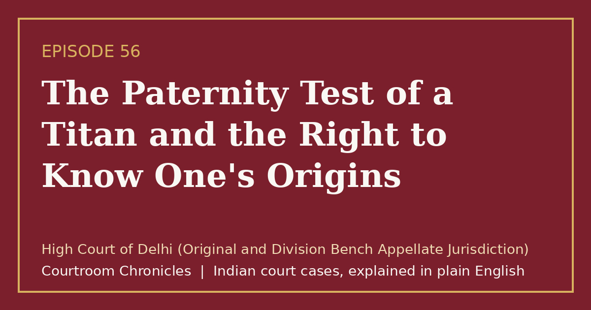

Episode 56
The Paternity Test of a Titan and the Right to Know One's Origins
In a civil paternity suit against a former state chief minister, the Delhi High Court separated legal legitimacy from biological truth and enforced DNA testing.
EvidenceConstitutional lawFamily lawPrivacy
#CourtroomChronicles#IndianLaw#EvidenceAct#DNATesting#RightToIdentity#FamilyLaw#DelhiHighCourt

Listen
- Court
- High Court of Delhi (Original and Division Bench Appellate Jurisdiction)
- Date of Decision
- December 23, 2010 (DNA Test Order) and April 27, 2012 (Enforcement Order)
- Nature of Suit
- Civil declaratory suit filed in 2008 seeking a formal declaration of biological paternity
- Scientific Evidence
- DNA profiling across twenty-four chromosomal loci showing a 99.9999 percent probability of paternity
- Final Decree
- Declared biological father in April 2014 after public admission
Key takeaways
- Modern DNA science can be ordered in civil paternity disputes when a strong prima facie case and eminent need are established.
- Statutory presumptions of marital legitimacy cannot be weaponized to deny an adult child knowledge of their biological identity.
- Civil courts have inherent authority to enforce scientific testing orders rather than settling for weak paper inferences.
The case in brief
In 2008, a young advocate filed a civil suit in the Delhi High Court seeking a declaration that a prominent elder politician and former state chief minister was his biological father. Because the plaintiff had been born in 1979 while his mother was legally married to an estranged husband, the defendant invoked Section 112 of the Indian Evidence Act, arguing that birth during a valid marriage was conclusive proof of legitimacy and barred any paternity inquiry.
On December 23, 2010, a single judge of the Delhi High Court drew a landmark distinction between legal legitimacy and biological paternity, holding that Section 112 was meant to shield a child from stigma rather than allow a biological father to evade responsibility. Recognizing an adult child's right under Article 21 to know their biological origins, and noting an affidavit and DNA exclusion from the estranged husband, the court directed the defendant to submit a blood sample.
When the defendant defied the order by claiming that civil courts could at most draw an adverse inference under Section 114, a Division Bench ruled on April 27, 2012 that courts possess inherent power under Section 151 and execution authority to enforce DNA testing with reasonable police assistance. Following Supreme Court affirmation, the blood sample was drawn under judicial supervision in May 2012, and the unsealed report confirmed biological paternity with 99.9999 percent certainty.
Timeline
- Civil Paternity Suit Filed
An adult advocate sues a senior political leader in the Delhi High Court seeking a declaration of biological paternity.
- DNA Test Ordered
A single judge distinguishes legal legitimacy from biological paternity and orders the defendant to furnish a blood sample.
- Enforcement Order Passed
A Division Bench authorizes police assistance and reasonable force to enforce compliance with the DNA testing order.
- Blood Sample Collected
Under judicial supervision in Dehradun, a civil surgeon draws the defendant's blood sample for forensic analysis in Hyderabad.
- DNA Report Unsealed
The High Court unseals the forensic report confirming biological paternity with a 99.9999 percent probability.
What the court decided
DNA testing directed (2010) and enforced with police assistance (2012); following Supreme Court dismissal of the challenge, forensic testing confirmed biological paternity, leading to a final declaratory decree in April 2014.
Key holdings
- Legal legitimacy under Section 112 of the Indian Evidence Act and biological paternity are distinct concepts; Section 112 protects a child from illegitimacy and cannot be used by a putative father to block scientific truth.
- An individual has a fundamental right under Article 21 of the Constitution to know their biological origins, which must be balanced against the defendant's privacy under the test of eminent need.
- Drawing an adverse inference under Section 114 is not an adequate substitute for conclusive scientific truth when a party wilfully defies a court-ordered DNA test.
- Under Sections 51 and 151 of the Code of Civil Procedure, civil courts possess inherent power to enforce medical testing orders using reasonable police assistance so court decrees are not rendered futile.
Legal principles
Right to Know Biological Origins
Every person has a fundamental human and constitutional interest in knowing the truth of their genetic parentage.
In this case: The court harmonized domestic evidence law with international child-rights norms and Article 21 to permit an adult son to establish his biological father.
Distinction Between Legitimacy and Paternity
Statutory presumptions of marital legitimacy exist to protect children, not to shield third parties from biological accountability.
In this case: Because the estranged husband had already confirmed non-access and was excluded by DNA testing, Section 112 did not bar determining true paternity.
Enforceability of Judicial Orders
Courts must not allow their lawful orders to be rendered powerless by litigants who refuse compliance.
In this case: The Division Bench rejected the argument that only an adverse inference could be drawn and authorized police-assisted enforcement of the blood draw.
The law then and now
Because the suit was filed in 2008 and decided between 2010 and 2014, it was governed by the Indian Evidence Act, 1872 and the Code of Civil Procedure, 1908.
Left: the law applied to this case. Right: the matching provision today (the new criminal codes apply only to offences on or after 1 July 2024).
Re-enacted as Section 116 of the Bharatiya Sakshya Adhiniyam, 2023, modernizing the wording from 'legitimate son' to 'legitimate child' while keeping the non-access rule.
Re-enacted as Section 119 of the Bharatiya Sakshya Adhiniyam, 2023, preserving the court's discretion to draw adverse inferences when evidence is withheld. See all 3 episodes on this provision →
Re-enacted as Section 39 of the Bharatiya Sakshya Adhiniyam, 2023, governing expert scientific testimony including DNA profiling. See all 6 episodes on this provision →
- Bharatiya Nagarik Suraksha Sanhita, 2023Section 144Order for maintenance of wives, children and parents
Re-enacted as Section 144 of the Bharatiya Nagarik Suraksha Sanhita, 2023, maintaining a biological parent's duty to support legitimate or illegitimate children. See all 2 episodes on this provision →
- —
Unchanged. See all 12 episodes on this provision →
Sources
- Judgment of the High Court of Delhi (DNA Test Order), December 23, 2010
- Judgment of the High Court of Delhi (Enforcement Order), April 27, 2012
- Constitution of India (Official Legislative Department Text)
- Bharatiya Sakshya Adhiniyam, 2023 and Indian Evidence Act, 1872 Comparative Table (UP Police)
- Bharatiya Nagarik Suraksha Sanhita, 2023 and Code of Criminal Procedure, 1973 Comparative Table (UP Police)